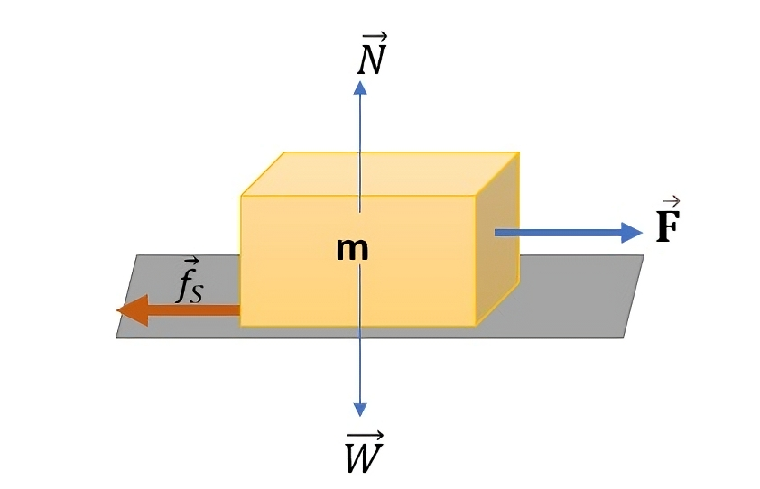
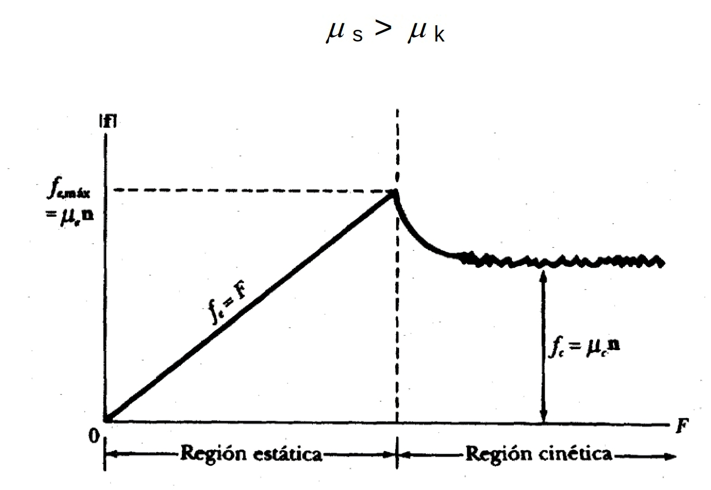
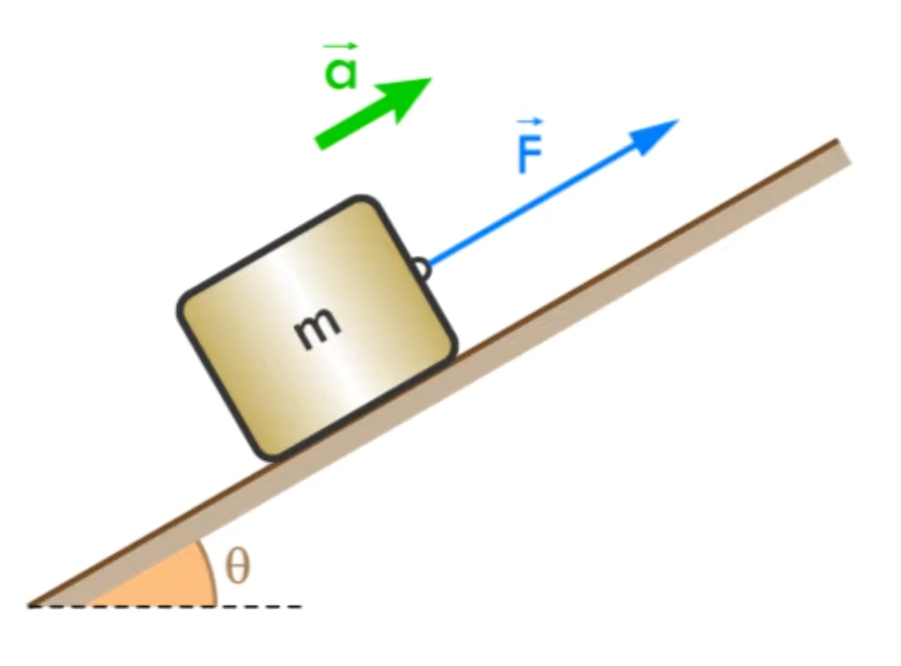
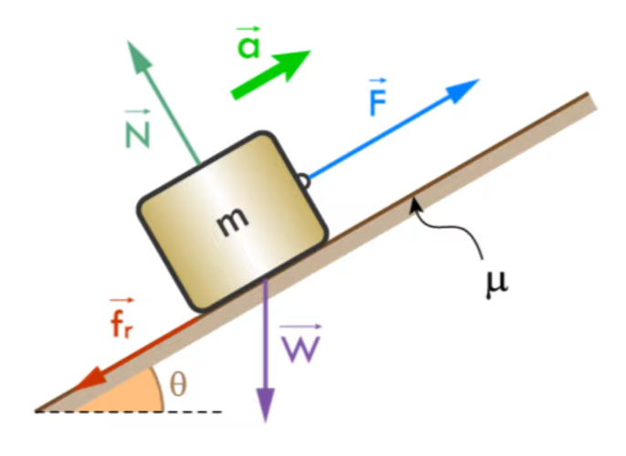
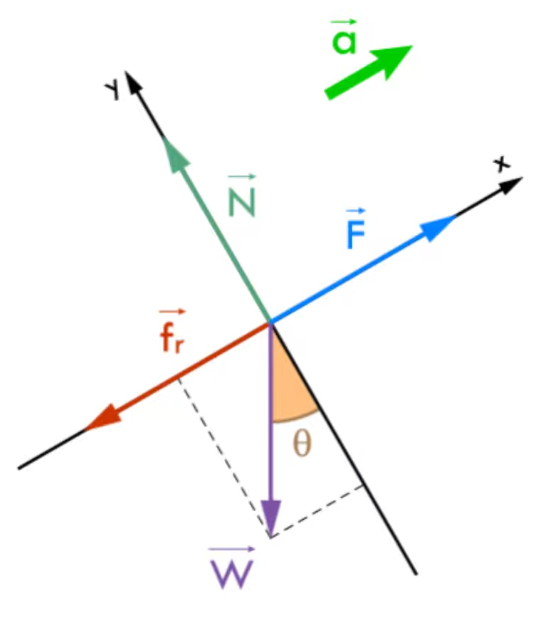
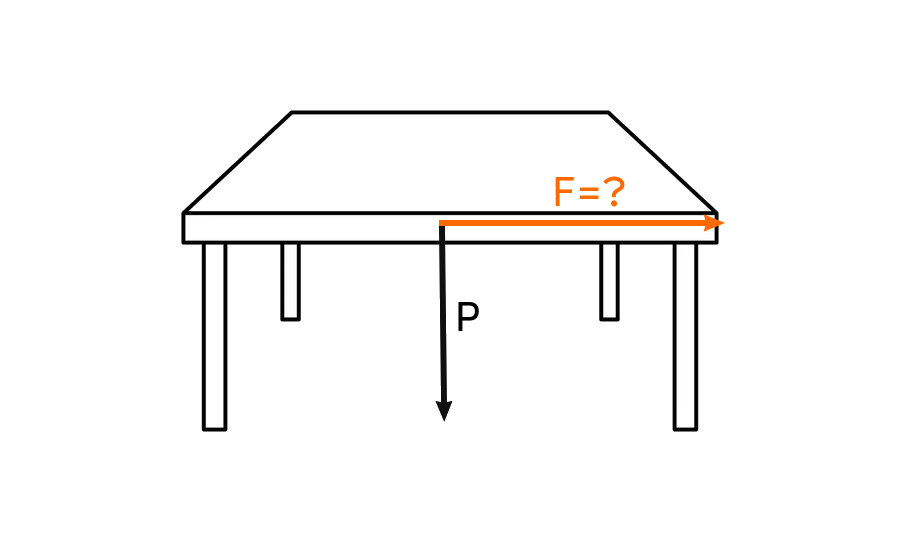
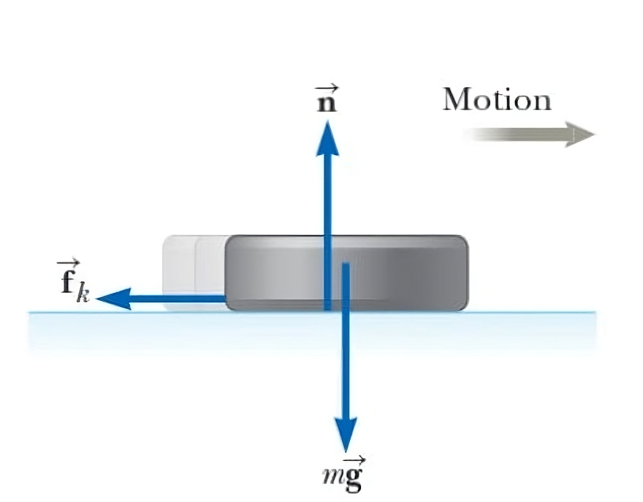

Fricción
Fricción
La fricción es una fuerza que se opone al movimiento de un objeto. Se produce cuando dos superficies están en contacto y se mueven una sobre la otra. La fricción puede ser estática o cinética, dependiendo de si el objeto está en reposo o en movimiento.

Tipos de fricción
Fricción estática
La fricción estática es la fuerza que impide que un objeto en reposo comience a moverse. Esta fuerza es proporcional a la fuerza normal y depende de la naturaleza de las superficies en contacto. La fricción estática máxima se puede calcular con la siguiente fórmula: \[ F_{s,max} = \mu_s \cdot N \] donde \(\mu_s\) es el coeficiente de fricción estática y \(N\) es la fuerza normal, que es la fuerza perpendicular a la superficie de contacto.
Fricción cinética
La fricción cinética es la fuerza que actúa sobre un objeto en movimiento. Esta fuerza es generalmente menor que la fricción estática máxima y se puede calcular con la siguiente fórmula: \[ F_k = \mu_k \cdot N \] donde \(\mu_k\) es el coeficiente de fricción cinética y \(N\) es la fuerza normal.

Ejemplo
Una persona mueve un bloque de 68 kg de masa con una aceleración de 2 \(\left [\frac{m}{s^2}\right ]\), si el ángulo de inclinación es de 30° y el coeficiente de fricción cinética es de 0.3, ¿cuál es la fuerza que se aplica al bloque?



Representemos las fuerzas en \(X\): \[ \sum F_x = m \cdot a \] \[ F - f_r - F_{gx} = m \cdot a \] \[ F - f_r - m \cdot g \cdot sen(\theta) = m \cdot a \] \[ F - \mu_k \cdot N - m \cdot g \cdot sen(\theta) = m \cdot a \]
Representemos las fuerzas en \(Y\): \[ \sum F_y = 0 \] \[ N - m \cdot g \cdot cos(\theta) = 0 \] \[ N = m \cdot g \cdot cos(\theta) \]
Sustituyendo \(N\) en la ecuación de \(X\): \[ F - \mu_k \cdot m \cdot g \cdot cos(\theta) - m \cdot g \cdot sen(\theta) = m \cdot a \] \[ F = m \cdot a + \mu_k \cdot m \cdot g \cdot cos(\theta) + m \cdot g \cdot sen(\theta) \]
\[ F = m \cdot (a + \mu_k \cdot g \cdot cos(\theta) + g \cdot sen(\theta)) \] Tenemos todos los datos, reemplazamos: \[ F = 68 \cdot (2 + 0.3 \cdot 9.81 \cdot cos(30°) + 9.81 \cdot sen(30°)) \] \[ F = 642.85 N \]
Ejercicio 1
Un escritorio masa \(40.8 kg\) y se encuentra en una superficie horizontal. Si el coeficiente de fricción estática entre el escritorio y la superficie es de \(0.4\), ¿cuál es la fuerza mínima que se debe aplicar para mover el escritorio?

Representemos las fuerzas en \(Y\): \[ \sum F_y = 0 \] \[ N - m \cdot g = 0 \] \[ N = m \cdot g \] Representemos las fuerzas en \(X\): \[ \sum F_x = 0\] \[ F - f_r = 0 \] \[ F - \mu_s \cdot N = 0 \] \[ F = \mu_s \cdot N \]
\[ F = \mu_s \cdot m \cdot g \] Para crear movimiento: \[ F \gt \mu_s \cdot m \cdot g \] Podemos calcular la fuerza de fricción estática: \[ F = 0.4 \cdot 40.8 \cdot 9.81 \] \[ F = 160.1 N \]
Por lo tanto, la fuerza mínima que se debe aplicar para mover el escritorio debe ser mayor a \(160.1 N\), por ejemplo \(160.2 N\).
Ejercicio 2
Un disco de hockey sobre un estanque congelado tiene una velocidad inicial de \(20 m/s\). Si el disco permanece siempre sobre el hielo y se desliza 115 m antes de detenerse, determine el coeficiente de fricción cinética entre el disco y el hielo.

Realizemos la suma de fuerzas en \(Y\): \[ \sum F_y = 0 \] \[ N - m \cdot g = 0 \] \[ N = m \cdot g \] Esta ecuación nos dice que la fuerza normal es igual al peso del disco, ya que no hay fuerzas verticales actuando sobre él.
Realizemos la suma de fuerzas en \(X\), la fricción está actuando en la dirección opuesta al movimiento del disco, por hay un movimiento neto en la dirección negativa de \(X\). \[ \sum F_x = m \cdot a \] \[ - f_r = m \cdot a \] \[ - \mu_k \cdot N = m \cdot a \] \[ - \mu_k \cdot m \cdot g = m \cdot a \] \[ - \mu_k \cdot g = a \]
Para resolver el problema, nos tenemos que dar cuenta que el disco se mueve en Movimiento Uniformemente Acelerado. Lo que nos permite modelar la situación, la fuerza de fricción es una fuerza constante que actúa sobre el disco, y la aceleración es negativa porque el disco está desacelerando.
\[ \vec{a} = -a \hspace{3mm} \hat{\imath}\left [\frac{m}{s^2}\right ] \] Integrando para encontrar la velocidad: \[ \int \vec{a} dt = \int -a \hspace{3mm} dt \] \[ \vec{v} = -at \hspace{3mm} \hat{\imath} + \vec{v_0} \] Nos dan una velocidad inicial de \(20 m/s\), por lo que \(\vec{v_0} = 20 \hspace{3mm} \hat{\imath} \left [\frac{m}{s}\right ]\). \[ \vec{v} = -at + 20 \hspace{3mm} \hat{\imath} \left [\frac{m}{s}\right ] \]
Ahora integramos para encontrar la posición: \[ \int \vec{v} dt = \int (-at + 20) \hspace{3mm} dt \] \[ \vec{r} = -\frac{1}{2}at^2 + 20t + \vec{r_0} \] No nos dan posición inicial, por lo que asumimos que es 0. \[ \vec{r} = -\frac{1}{2}at^2 + 20t \hspace{3mm} \hat{\imath} \left [m\right ] \]
En base a esto podemos armar un sistema de ecuaciones, sabemos que llega a la posición \(\vec{r} = 115 m\) y que se detiene, por lo que la velocidad es 0 en ese punto. \[ \vec{r} = -\frac{1}{2}at^2 + 20t \hspace{3mm} \hat{\imath} \left [m\right ] \] \[ 115 = -\frac{1}{2}at^2 + 20t \] \[ \vec{v} = -at + 20 \hspace{3mm} \hat{\imath} \left [\frac{m}{s}\right ] \] \[ 0 = -at + 20 \] \[ t = \frac{20}{a} \]
Podemos reemplazar \(t\) en la ecuación de posición: \[ 115 = -\frac{1}{2}a\left(\frac{20}{a}\right)^2 + 20\left(\frac{20}{a}\right) \] \[ 115 = -\frac{1}{2}\frac{400}{a} + \frac{400}{a} \] \[ 115 = \frac{400}{a} - \frac{200}{a} \] \[ 115 = \frac{200}{a} \] \[ a = \frac{200}{115} \] \[ a = 1.74 \left [\frac{m}{s^2}\right ] \]
Reemplazamos \(a\) en la sumatoria de fuerzas en \(X\): \[ - \mu_k \cdot g = a \] \[ - \mu_k \cdot 9.81 = 1.74 \] \[ \mu_k = -\frac{1.74}{9.81} \] \[ \mu_k = -0.177 \] El coeficiente siempre es el valor absoluto, por lo que el resultado es: \[ \mu_k = 0.177 \]